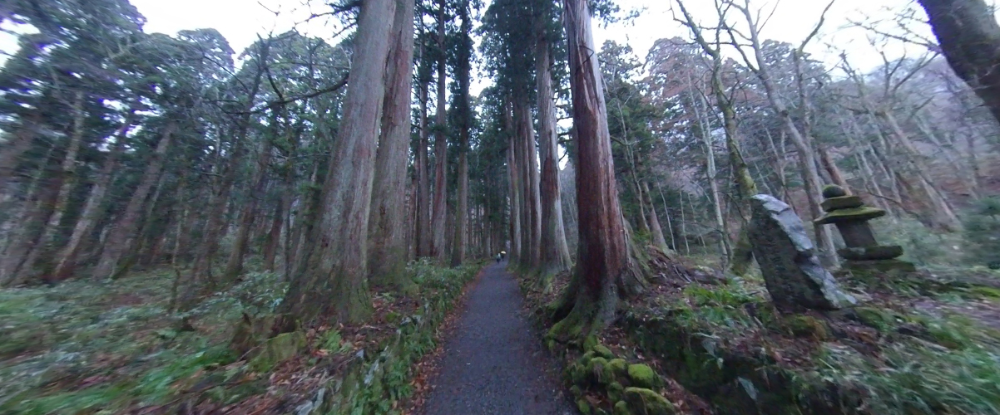
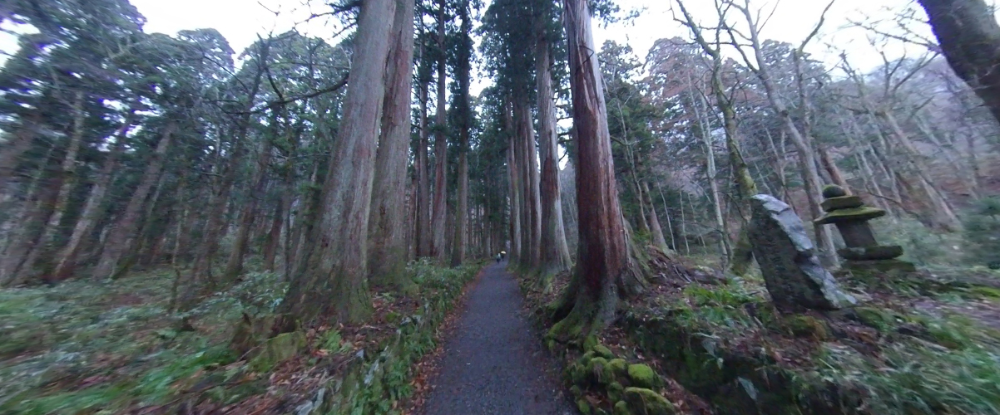

←スマホからご覧になる場合はこちらから
戸隠神社（とがくしじんじゃ）は、長野県長野市北西部の戸隠山周辺に、
宝光社、火之御子社、中社、九頭龍社、奥社の五社を配する神社。旧社格は国幣小社。
奥社（おくしゃ）
祭神は天手力雄命（あめのたぢからおのみこと）で、天照大神が隠れた天岩戸をこじ開けた大力の神。
神話では天手力雄命が投げ飛ばした天岩戸が現在の戸隠山であるとされる。
中社から車で2.5kmほど車道を登った後、まっすぐ続く約2kmの参道（車両進入禁止）を登りきった場所にある。
途中に赤い「随神門（山門）」があり、その奥は17世紀に植えられたとされる杉並木になっている。
神仏分離以前は随神門より奥の参道左右に子坊が立ち並んでいた。旧奥院。
廃仏毀釈までは聖観音菩薩（現在は千曲市の長泉寺本尊、仁王尊像は長野市の寛慶寺）を祀っていた。
戸隠三十三窟「本窟」・「宝窟」と言われる中心となる窟が奥社本殿内部にあるが
非公開なので内部に何があるのかは秘密とされている。